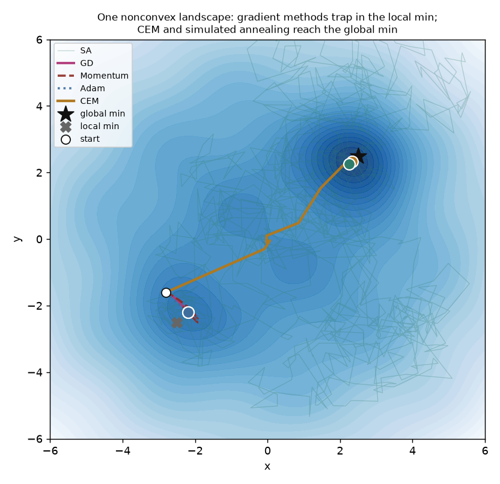

One nonconvex landscape (a bowl with a deep global well, a shallow local well, and ripples), minimized five ways from the same starting point — from plain gradient descent up to sampling-based global search. Each is really run; each ends where its assumptions take it.
The rule: match the optimizer to the landscape. Gradient methods (GD, momentum, Adam) descend into the nearest minimum and stay there — on a nonconvex problem they get trapped near the start. Global samplers (the cross-entropy method, simulated annealing) explore and find the global optimum. CEM is exactly the sampling idea behind MPPI and sampling-based MPC.

| method | final value (global ≈−1.85) | outcome |
|---|---|---|
| Gradient descent first-order local | -0.58 | ✗ local min |
| Momentum first-order local | -0.58 | ✗ local min |
| Adam adaptive first-order | -0.58 | ✗ local min |
| CEM cross-entropy sampling | -1.82 | ✓ global min |
| Simulated annealing stochastic global | -1.8 | ✓ global min |
Step downhill along the negative gradient. The workhorse of everything, but it only ever moves to lower cost right where it stands.
From this start it rolls straight into the nearby local minimum and stops (-0.58, still 6.64 from the global min).
Gradient descent with a velocity term that accumulates, so it rolls through small bumps and speeds up down long slopes.
Rolls through the ripples but still settles in the same local basin (-0.58) — it doesn't carry enough energy to cross into the far, deeper well.
Scales each coordinate's step by running estimates of the gradient's mean and variance — the default optimizer for deep nets.
Adapts its step size but is still a local, gradient-following method: same local minimum (-0.58).
Sample a population of candidates, keep the best 'elite' fraction, refit the sampling distribution to them, and repeat — no gradients at all.
Explores widely and its distribution walks over to the deep well: it finds the global minimum (-1.82, only 0.24 away).
Random moves, accepted even when they go uphill — with a probability that cools over time, so it explores early and settles late.
Its early uphill moves let it climb out of the local basin and wander to the global well (-1.8, 0.35 away).
scripts/optimizer_zoo_experiments.py, pure NumPy), five optimizers each run from the same point; the figure and numbers come straight from that run. The lesson generalises: gradient descent is local, so on a nonconvex loss the initialization decides which basin you land in — which is why global samplers matter for planning and why deep learning leans on good initialization and stochasticity.